motivation
- many GAN variants have emerged with improvements in sample quality and training stability. However, they have not been well visualized or understood.
GAN模型不能可视化、不可解释 - current problems：
- To produce a church image, what knowledge does a GAN need to learn？
- When a GAN sometimes produces terribly unrealistic images, what causes the mistakes?
- Why does one GAN variant work better than another?
- What fundamental differences are encoded in their weights?
contribution
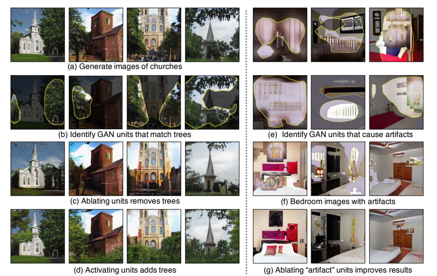
present a general method for visualizing and understanding GANs at different levels of abstraction, from each neuron, to each object, to the contextual relationship between different objects
探索GAN 内部对物体的表达，以及不同物体的表达之间的联系
provides the first systematic analysis for understanding the internal representations of GANs.
practical applications：
- comparing internal representations across different layers, GAN variants and datasets
- debugging and improving GANs by locating and ablating “artifact” units (Figure 1e)
- understanding contextual relationships between objects in scenes
- manipulating images with interactive object-level contro
method
goal: analyze how objects such as trees are encoded by the internal representations of a GAN generator
使用中间变量 r 来代替 z，r 拥有表示各类物体的信息
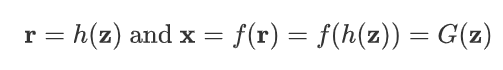
how information is encoded in r
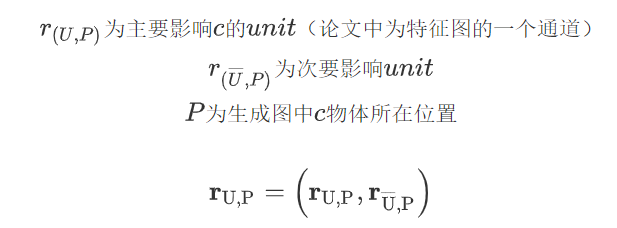
Dissection： 通过计算每个class与独立的unit之间的一致性来验证在r中是否有c的显示表示。
Intervention：通过激活/抑制unit来验证units的因果集和units与Object class之间的因果关系。
Characterizing Units by Dissection
intersection-over-union (IoU) measure:
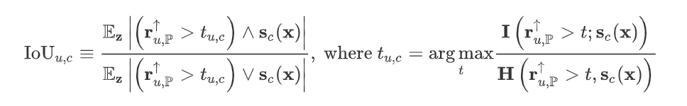
将 unit u 上采样至 W*H（生成图片大小）
- 利用 val set 最大化 information quality ratio I/H
- 通过 t 得到 binary mask，与 S(x) 计算IoU
- problem:
an object class that a set of units match closely
一对多映射
which units are responsible for triggering the rendering of that object?
A unit that correlates highly with an output object might not actually cause that output.
IoU 值最高不一定导致物体渲染
need a way to identify combinations of units that cause an object
any output will jointly depend on several parts of the representation
unit-object 之后，需要寻找 unit-unit 之间联系
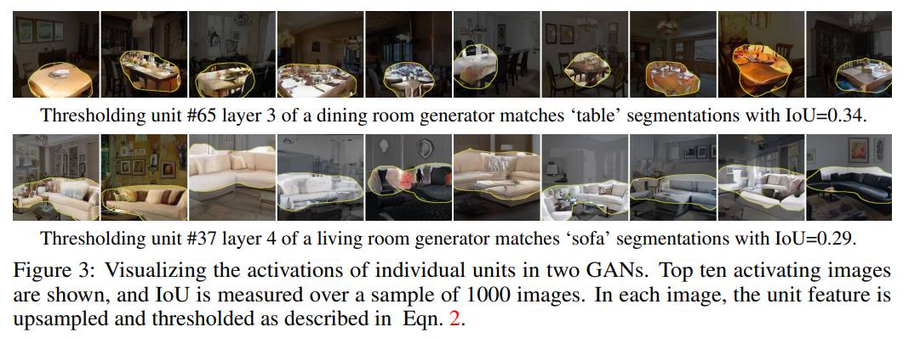
- reason:
- “many units can approximately locate emergent object classes when the units are upsampled and thresholded.”
- “Instead, IQR emphasizes that the reconstructed signal has to keep essential information from the original signal.”
Measuring Causal Relationships Using Intervention
interventions:
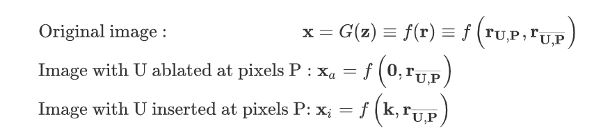
on: 将 r 置为 k
其中 k 为输出中含有物体 c 的位置的激活层的均值
off: 将 r 置为 0
An object is caused by U if the object appears in Xi and disappears from Xa.
Average Causal Effect (ACE)
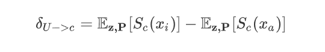
- 通过分割模型 S 表示生成图像 x 中 c 物体所占比例，量化 on/off 差异
- we need to identify a set of units U that maximize the average causal effect δU→c for an object class c
- Finding sets of units with high ACE:
variable:
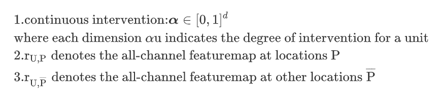
objective:
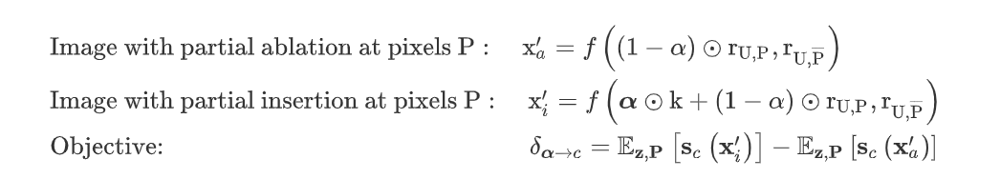
optimize:
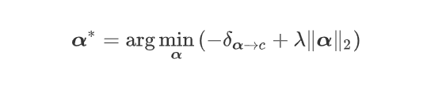
trick：
优化 α 过程中，存在部分物体 (门) 所占比例过少的现象，因此训练集不仅包括含有门的 output，还包括原始 output 没有门但激活后 output 含有门的部分
evaluation 过程中，检测 ablations 使用整体图片作为 P ，insertions 使用均匀采样作为 P
初始化 α :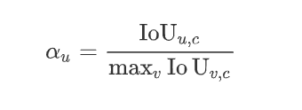
- result:
如右图所示：ACE 效果优于 IoU
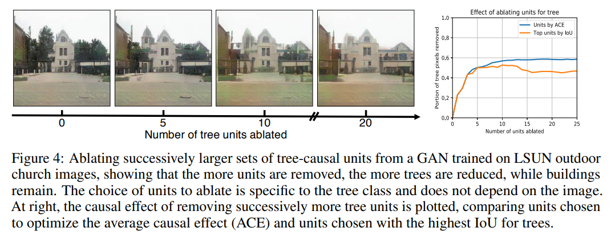
experiment
Comparing Units Across Datasets, Layers, and Models
Emergence of individual unit object detectors
- 更加关注在外观上变化较大的物体对应的 units，因为其更能提取出物体类别的抽象概念
Interpretable units for different scene categories
- 不同场景中，units 常代表 适合场景的物体。例如厨房中表示厨具或餐桌
- 一些 units 可能表示物体的一部分，例如人的头部或身体
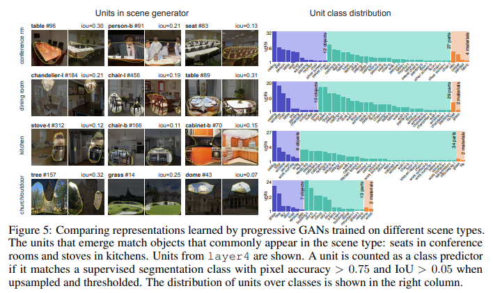
Interpretable units for different network layers
- 浅层表示模糊，中层表示多为物体信息，深层表示多为局部像素特征：材料、颜色
Interpretable units for different GAN models
- 比较不同GAN方法影响
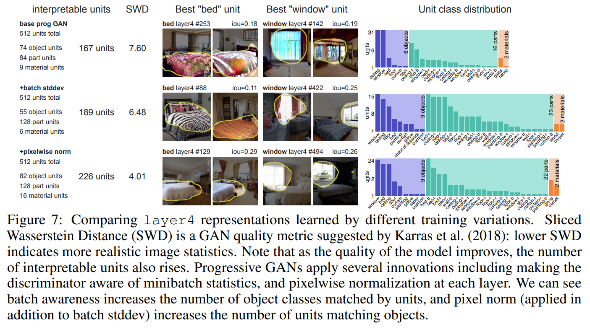
Diagnoising and Improving GANs
- “analyze the causes of failures in their results”
- process：
- 人工标注伪影
- 抑制伪影对应units
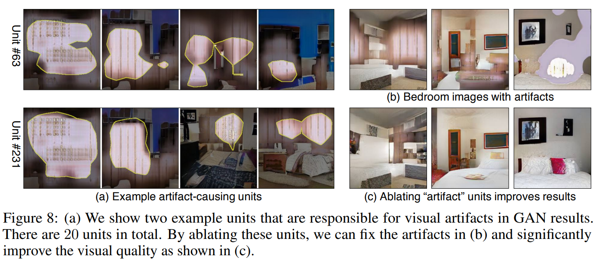
Locating Causal Units with Ablation
- 通过抑制 units，大部分物体消失：人、窗户，但一部分物体仅减小密度或尺寸，几乎不会消失：桌椅
- 这些物体的移除取决于场景类型，窗户在会议场景易于移除，但在其他场景难以移除
- 作者认为GAN学习到了某些场景由特定的物体构成：卧室-窗户，因此难以移除
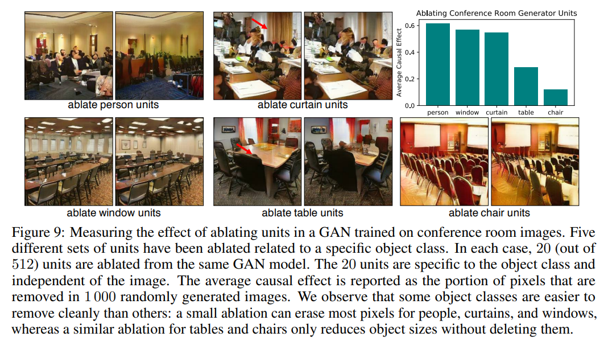
Characterizing Contextual Relationship via Insertion
- 同一类别激活 units 赋予相同 k 值，但效果与周围物体有很大关系，例如激活与门有关的 units，在墙壁或窗户周围有显著效果，但天空、草丛周围激活，即使改变了 units 在后续层中改变逐渐消失
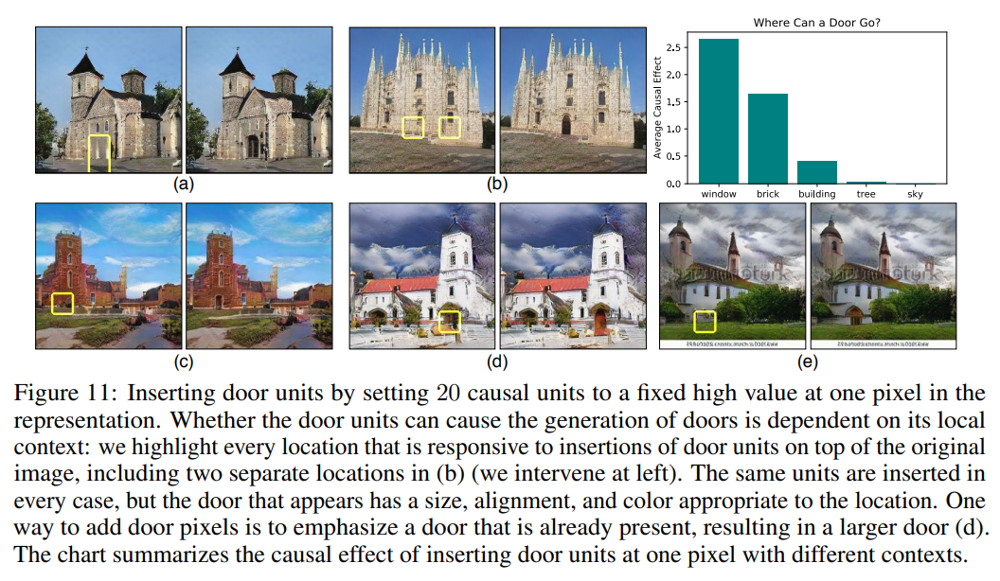